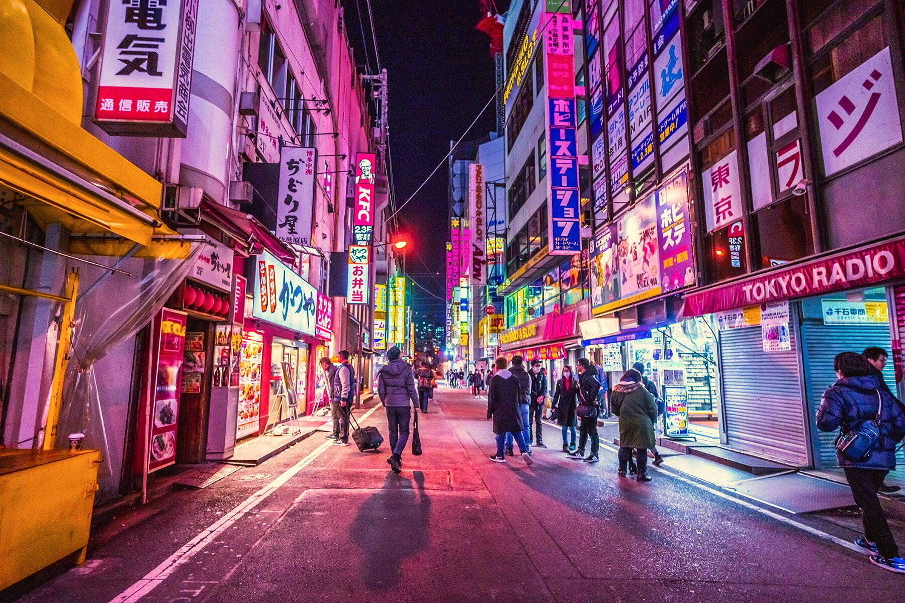

Top 1: Tokyo

1. Geography
The continental portion of Tokyo is located northwest of Tokyo Bay and is estimated to be 90
km in
length from east to west and 25 km from north to south. Chiba Prefecture was bordered to the
east,
Yamanashi to the west, Kanagawa to the south and Saitama to the north. The interior part of
Tokyo is
divided into special zones (which occupy the eastern part) and the Tama region that runs
along the
west.
The administrative boundary of Greater Tokyo also includes two Pacific islands that run
straight to
the south: the Izu Islands and the Ogasawara Islands, which extend more than 1000 km over
the
mainland of Japan.Under Japanese law, Tokyo is designated a Dollar (都 -to) [19].
The administrative structure is on par with the provinces of Japan. In the Tokyo region, there are many smaller administrative structures, called cities. Comprised of 23 special districts (特別 区 -khu), these are municipalities, each with its own mayor and council and has a city structure. In addition to these 23 special zones, Tokyo also has 26 sub-cities (市-thi), 5 towns (町 -dinh) and 8 villages (村 -thon), each with its own local government. The head of the Tokyo metropolitan government is a publicly elected governor and city council. The city headquarters is located in the Shibuya district, which operates all of Tokyo, including rivers, canals, lagoons, islands, and national parks, in addition to streets, skyscrapers and subway system.
2. History
Tokyo's history shows Japan's largest urban development. The eastern part of Tokyo in the
Kantō
Region, which merges with modern Saitama prefecture, Kawasaki city and eastern part of
Yokohama city
(Musashi area); is one of the provinces applying the ritsuryo legal system, the historical
legal
system based on the philosophy of Confucianism and Chinese Buddhism in Japan.
Tokyo's 23 special districts, including Toshima, Ebara, Adachi and Katsushika make up the
heartland
of Tokyo. Western Tokyo is the Tama prefecture. The oldest Buddhist temple in Tokyo is
Sensō-ji in
Asakusa. Edo Village began to be formed during the Kamakura Period.
3. Weather
Tokyo has a humid subtropical climate, a temperate monsoon climate [24] with four distinct seasons:
spring, summer, autumn, and winter. The summer is hot and humid and the winter is quite cold with
strong cold spells from the Siberian high pressure. The region, like much of Japan, experiences
seasonal delays for a month, with the warmest month being August, averaging 26.4 ° C (79.5 ° F) and
the coolest month being January. , average 5.2 ° C (41.4 ° F). Record low temperature was −9.2 ° C
(15.4 ° F) on January 13, 1876, while a record high was 39.5 ° C (103.1 ° F) on May 20. July 2004.
Record of lowest temperature as low as 30.3 ° C (86.5 ° F) on August 12, 2013, making Tokyo one of
the seven observing sites in Japan with low temperatures above 30 ° C (86.0 ° F). Annual
precipitation averages close to 1,530 mm (60.2 in), with wetter summers and drier winters. The
amount of snow, though sporadic, still happens every year. The wettest month since records started
in 1876 was October 2004, with 780 millimeters (30 in) of rain, including 270.5 mm (10.65 in) on the
9th of that month; during the last four months of no rain observed was December 1995.
4. Culture
Tokyo has many museums. Particularly in Ueno Park has 4 national museums, including: Tokyo National
Museum, Japan's largest museum and specializing in traditional Japanese art; National Museum of
Western Art; Tokyo National Museum of Modern Art, with collections of Japanese art as well as more
than 40,000 Japanese and international films. There is also the National Science Museum and a public
zoo in Ueno flower garden. Other museums include: The Nezu Art Museum at Aoyama; The Edo-Tokyo
Museum at Sumida along the Sumida River in central Tokyo and the national parliament library, the
National Archives, and the National Museum of Modern Art, are located near the palace.
Ginza is Tokyo's famous upscale shopping district and one of the most luxurious in the world.
Tokyo has many theaters for the performing arts. These include private and state theaters devoted to
traditional Japanese arts such as Noh and Kabuki plays as well as modern theater genres. Symphony
orchestras and groups performing Western and traditional music. Tokyo has a wide variety of pop and
rock music venues of all sizes from small clubs to large venues like the Nippon Budokan. There are
many festivals going on throughout Tokyo.Major festivals include the Sannō at Hie Shrine, Sanja at
Asakura Shrine and Kanda Festival held every two years. Every year, at the end of the seventh day of
July, there will be a fireworks display at the Sumida River that attracts more than one million
viewers. During the cherry blossom season in April, many people gather at Ueno Park, Inokashira Park
and Shinjuku Gyoen National Park to have a picnic under the shade of the cherry tree.
Many different festivals take place across Tokyo. Key events include Sannou at Hie Temple, Sanja at
Asakusa Temple and biennial Kanda Festival. Finally there is a parade with ornate buoys and
thousands of people. Every year on the last Saturday of July, a giant fireworks display on the
Sumida River attracts more than a million viewers. Once the cherry blossoms bloom in spring, many
residents gather at Ueno Park, Inokashira Park and Shinjuku Gyoen National Park to picnic under the
flowers.
Harajuku, a location in the Shibuya district, is known all over the world for the style, fashion and
cosplay of Japanese youth.
Top 2: Seoul
1. Geography
Seoul is located in the northwestern part of Korea, with an estimated land area of 605.52
km² with a radius of about 15 km, divided into the north and south halves by the Han River.
The Han River has played an important role throughout Korean history. During the Three
Kingdoms period in Korea, the three countries always tried to gain control of this land,
where the river was used as a trading post to China (across the Yellow Sea). However, this
river is no longer used for maritime purposes because the estuary is located on the border
between the two Koreas and is blocked from civilian passage.
Historically, the city during the Korean dynasty was surrounded by the Seoul Fortress Wall,
stretching between four main mountains in central Seoul: Namsan, Naksan, Bukhansan and
Inwangsan. The city is surrounded by eight mountains as well as the lands of the Han River
Delta and the western region. Due to its geography and economic development policy, Seoul is
a very multi-center city. The area was originally the former capital of the Korean dynasty,
and mainly consists of Jongno District and Jung District, forming the historical and
political center of the city. However, for example, the city's financial center is
considered thriving in Yeouido, while its economic center is the Gangnam district.
2. History
The history of Seoul can be traced back to 18 BC, when it was the capital of Fei Cheng of
the Baekje Dynasty (founded in 18 BC) in northeastern Seoul. There are several city walls
remaining in that area from this point. Phong Load earth citadel, a earthen wall just
outside Seoul, is believed to have been at the main location of Captain Le Thanh. When the
three countries of the Three Kingdoms contested this strategic area, control shifted from
the Bach Te court to Cao Cau Ly in the 5th century and from Cao Cau Ly to Tan La in the 6th
century.
In the 11th century, after defeating Reunification, the Gaoqilian court built a summer
palace in Seoul (present-day Seoul), called "Nanjing". Only from this period, Seoul became a
more densely populated area. When the Korean Dynasty (also known as Joseon) replaced Cao Cau
Ly, the capital was completely relocated to Hancheng, and became the capital of the Korean
Dynasty until the dynasty collapsed in 1910. in the 14th century, it was the royal residence
until 1592. Another great palace, Xuong Duc Cung, was built in 1405, serving as the royal
palace from 1611 to 1872. After the Dynasty Tien changed its name to the Korean Empire in
1897, and Hancheng was also renamed Seoul as it is today.
In 1945, the city was officially renamed Seoul, and was designated a special Korean city in
1949.
During the Korean War, Seoul was considered the main battlefield and was repeatedly torn between the
military of the DPRK (also known as Korea or North Korea) and the Republic of Korea (also known as
South Korea or South Korea), which caused the city to be almost completely destroyed after the war.
The Korean capital had to temporarily relocate to Busan. An estimate of the enormous damages shows
that after the war, at least 191,000 buildings, 55,000 houses, and 1,000 factories were destroyed.
In addition, an influx of refugees entered Seoul during the war, increasing the population of the
city and its metropolitan area to an estimated 1.5 million in 1955.
After the war, Seoul began to focus on reconstruction and modernization. As the Korean economy began
to develop rapidly in the 1960s, urbanization also accelerated and workers began moving to Seoul and
other major cities. Since the 1970s, the size of the Seoul administrative area has expanded
dramatically as it merged several towns and villages from several surrounding counties. The
aggressive economic policies of the 1960s and 1970s helped rebuild the city very quickly. Seoul is
the engine that creates the miraculous Han River miracle for the Korean economy.
3. Weather
According to the Köppen climate classification, Seoul is predominantly a humid continental temperate climate and includes only a few features of the humid subtropical climate, despite the fact that Korea is surrounded by all three seas. The suburbs of Seoul are usually cooler than central Seoul because of the urban heat island effect. Summer normally has a hot and humid climate due to the influence of the East Asian monsoon, with the rainy season lasting from June to September. August is the hottest month of the year, with an average temperature of 23.4 ° C to 32.6 ° C (74 ° F to 91 ° F) and also hotter. Winters are very cold when compared to regions in the same latitude, with typically below freezing, January average temperatures ranging from -5.9 ° C to 1.5 ° C (24.7 ° F to 31.4 ° F Winter is usually much drier than summer, although it normally takes 24.9 days to snow in a year in Seoul. Temperatures drop significantly below −10 ° C (14 ° F) and in some cases as low as −15 ° C (5 ° F) during the winter of January and February. Temperatures below −20 ° C (4 ° F) have also been recorded.
4. Culture
While Seoul city has a large population density, it is also the area where you can see five world
cultural heritages identified as the beautiful Changdeok Palace, Joseon Dynasty's Royal Mausoleum,
Hwaseong Fortress, Namhansanseong (great mountain fortress) and Jongmyo temple (14th century
Confucian
church where monuments of Joseon kings and queens are permanently worshiped).
There are still a lot of historical symbols located in Seoul, home to spaces with modern buildings
and
natural attractions such as Mount Bukhan Park, Lotte World (the second largest indoor amusement park
in
the world. N Seoul Tower, Dongdaemun are modernly designed Design Plaza, Sevit Floating archipelago
and
Moonlight rainbow fountain, installed on Banpo bridge on Han River connecting Yeongsan and Seocho
districts. The fountain is considered to be the longest bridge fountain in the world. The 63
building,
decorated with gold, glows during sunset and illuminates with dim light for 23 minutes as the sun
sets.
Other remnants of the past included city gates such as the Great Gate or Dongdaemun and the Southern
Great Gate or Namdaemun. Near the door are traditional markets and large shopping malls, Dongdaemun
Market and Namdaemun Market.Seoul has 115 museums, including the National Folk Museum in Jongno,
located
within the Gyeongbok Palace grounds, Namsangol Hanok village and Bukokon Hanok village. A "hanok" is
a
traditional house in Korea. Folk villages allow visitors to experience the traditional Korean life
during the Joseon Dynasty. Modern museums include the Seoul Museum of Art and the Ilmin Museum of
Art.
Seoul is surrounded by mountains and maintains a number of parks, with modern structures, monuments,
sculptures, interspersed with natural elements including trees, shrubs, ponds, streams, and other
Other
natural works.
Top 3: Delhi

1. Geography
Delhi, a true cosmopolitan city with diversified culture is the capital of the world’s
largest democracy, India. Known as Indraprastha in ancient times.
The state is spread over an area of 1483 square kilometer. According to the Indian geography
the state is located at the center of the Indian subcontinent, amidst the ranges of Himalaya
and the Aravalli. Delhi has been wooed by rulers, attracted invaders and has been build and
destroyed several times. Historians say that is has been rebuilt seven times during
different ages.
Situated on the banks of river Yamuna, Delhi is located at 28.38° N and 77.13° E on the
northern part of India. There are three major geographical regions: the Yamuna flood plain,
the ridge & the Gangetic Plains. The Yamuna flood plains provide fertile soil suitable for
agriculture. However, these plains are prone to recurrent floods. With an average altitude
of 293 m above sea level, the ridge forms the most dominating feature in this region.
Delhi comprises of 200 villages which are heavily populated.Haryana and Uttar Pradesh are
the other states, which share their borders with Delhi in the west and east respectively.
It originates from the Aravalli Hills in the south and encircles the west, north-east and
north-west portions of the city. The Great Plains are located in the south of the city and
cover most of Delhi.
Delhi geography gives an overview of the capital city of India bearing a rich cultural
background.
2. History
Delhi, the capital of India has a strong historical background. It was ruled by some of the
most powerful emperors in Indian history.
The history of the city is as old as the epic Mahabharata. The town was known as
Indraprastha, where Pandavas used to live. In due course eight more cities came alive
adjacent to Indraprastha: Lal Kot, Siri, Dinpanah, Quila Rai Pithora, Ferozabad, Jahanpanah,
Tughlakabad and Shahjahanabad.
Delhi has been a witness to the political turmoil for over five centuries. It was ruled by
the Mughals in succession to Khiljis and Tughlaqs.
In 1192 the legions of the Afghan warrior Muhammad of Ghori captured the
Rajput town, and the Delhi Sultanate was established (1206). The invasion of Delhi by Timur in 1398
put an end to the sultanate; the Lodis, last of the Delhi sultans, gave way to Babur, who, after the
battle of Panipat in 1526, founded the Mughal Empire. The early Mughal emperors favoured Agra as
their capital, and Delhi became their permanent seat only after Shah Jahan built (1638) the walls of
Old Delhi.
From Hindu Kings to Muslim Sultans, the reins of the city kept shifting from one ruler to another.
The soils of the city smell of blood, sacrifices and love for the nation. The old 'Havelis' and
edifices from the past stand silent but their silence also speaks volumes for their owners and
people who lived here centuries back.
In the year 1803 AD, the city came under the British rule. In 1911, British shifted their capital
from Calcutta to Delhi. It again became the center of all the governing activities. But, the city
has the reputation of over throwing the occupants of its throne. It included the British and the
current political parties that have had the honour of leading free India.
After independence in 1947, New Delhi was officially declared as the Capital of India.
3. Weather
Delhi has an atypical climate version of the humid subtropical climate
(Köppen Cwa). The hot season lasts from 9 April to 8 July with average high temperatures above 36 °
C (97 ° F). The hottest day of the year averages May 22. The cold season lasts from December 11 to
February 11 with average high temperatures below 18 ° C (64 ° F). The coldest day of the year
averages January 4. In early March, the wind direction changed from northwest to southwest. The
monsoon comes in late June, accompanied by an increase in humidity.
Temperatures in Delhi typically range from 5 to 40 ° C (41.0 to 104.0 ° F), with the lowest and
highest ever recorded temperatures being −6.7 and 47.8 ° C, respectively ( 19.9 and 118.0 ° F). The
average annual temperature is 25 ° C (77 ° F); Average monthly temperatures range from 13 to 32 ° C
(55 to 90 ° F). The highest temperature recorded in July was 45 ° C (113 ° F) in 1931. Average
annual rainfall is about 714 mm (28.1 in), mostly during the monsoon period in July and August. The
average monsoon day in Delhi is June 29.
4. Culture
Delhi is considered a multicultural city. With 26 million people, Delhi is
described as a miniature India, with the emergence of many different cultures, religions and
traditions, most notably the "open heart" land.
The residents of this city have always been intimately adapted and attached to this constantly
changing culture. The people of Delhi give themselves an intimate name "Dilliwalas" - a term derived
from the phrase "Dillwalo ki Dilli", which means the land of people with open hearts.
The diversity of this city makes it very easy to find your own little corner. The vibe of the
capital Delhi is likened to the pleasant, sweet scent of your favorite coffee shop. You can smell,
feel a lot of things as soon as you step in and freely choose what you like.
According to Anjhula Mya Singh Bais, who has lived in New Delhi for six years described, the city is
the political center, but at the same time the fashion capital of the country. It gives a feeling of
a mix of New York City and Washington DC.
However, this also makes it harder for newcomers to blend in than in other Indian cities. "Delhi is
a place where people will notice who you are, where you are from, what you wear or drive, so
newcomers need time to settle in," Anjhula Mya Singh Bais said.
Top 4: City Saopaulo
1. Geography
São Paulo is located in the southeast of Brazil and is also located in the southeastern state of São Paulo, in the middle of two neighboring cities, Curitiba and Rio de Janeiro. The city is located on a plateau outside of Serra do Mar (Portuguese for "Sea Range" or "Coastal Range"), itself part of a vast region known as the Brazilian Plateau. , with an average altitude of 799 meters (2,621 ft) above sea level, although only at a distance of 70 km (43 miles) from the Atlantic. The distance is covered by two highways, Anchieta and Rodovia dos Imigrantes, which pull downhill, leading to the port city of Santos and the beach resort of Guarujá. The rolling terrain prevails in the urbanized region of São Paulo except for the northern region where the Serra da Cantareira Mountains reach altitude and the remains of the Atlantic rainforest. This region is seismically stable and has not had significant seismic activity
2. History
São Paulo (IPA pronunciations: [sɐ̃w̃ 'paw.lu]; the Portuguese almost reads "Pauline",
meaning "St. Paul") is the capital of the state of São Paulo in southeastern Brazil, 400
km from Rio de Janeiro and 1030 km from the federal capital, Brasília. This is the
largest city in Brazil.
The city area is 1,523 km² and a population of more than 11
million people (2006 IBGE estimate), is the most populous city in the Southern
Hemisphere and is a Global City.
The 19 million river people in the Greater São Paulo metropolitan
area (Região Metropolitana) make the metropolitan area one of the 5 most densely populated urban
areas in the world. If you include the nearby urban areas in the statistics such as: Baixada
Santista, São José dos Campos, Campinas, Sorocaba ... the Expanded Urban Area (Complexo
Metropolitano Estendido) has nearly 29 million people, just behind the Tokyo metropolitan area
with 35 million inhabitants. The state of São Paulo is also a populous state with a population
of 40 million.
The people of São Paulo are known as paulistanos. The motto of the city is Non ducor, duco,
which in Latin means "I am not commanded, I am the commander".
3. Weather
The city has a temperate humid climate (Cfa) that is influenced by monsoons, as classified by
Köppen [31]. In the summer (January to March), the average temperature is around 19 ° C (66 ° F)
and the average high temperature is close to 28 ° C (82 ° F). In winter, temperatures tend to
fluctuate between 8 and 21 ° C (46 and 70 ° F).
The record high temperature was 37.8 ° C (100.0 ° F) on October 17, 2014 and the lowest of -3.2
° C on June 25, 1918. The average temperature here is similar. similar to Sydney and Shanghai.
The Tropic of Cancer, at about 23 ° 27 'S, passes north of São Paulo and roughly marks the
boundary between the tropical and temperate zones of the South American continent. However, due
to its altitude, São Paulo is almost temperate.
The city spends four seasons. Winters are cold and dry, and summers are warm with little rain.
Fall and spring are transitional seasons. Rain occurs infrequently in remote areas or during
winter around the city. Areas far from the center and metropolitan cities, can reach
temperatures close to 0 ° C (32 ° F), or even lower in winter.
Rainfall is plentiful, averaging 1,454 mm (57.2 inches) per year. It is particularly popular
during warm months averaging 219mm (8.6inch) and drops in winter, averaging 47 mm (1.9 inches).
Neither São Paulo nor the nearby coast were affected by tropical storms and cyclone activity was
uncommon. In late winter, especially August, the city experiences a "veranico" or "verãozinho"
("little summer") phenomenon, which includes hot and dry weather, sometimes reaching
temperatures above 28 ° C ( 82 ° F). On the other hand, relatively cool summer days are quite
common when nagging winds blow from the ocean. On such occasions, daily high temperatures should
not exceed 20 ° C (68 ° F), with low temperatures typically lower than 15 ° C (59 ° F), however,
in summer can be very hot when the heat wave hits the city and ambient temperature 34 ° C (93 °
F), but in places with a greater density of skyscrapers and less tree cover, temperatures can
feel like 39 ° C (102 ° F), on Avenue Paulista, for example. In the summer of 2012, São Paulo
was hit by a 2-week heat wave with highs between 29 and 34 ° C during the hottest days.
Deforestation, groundwater pollution and climate change make São Paulo increasingly vulnerable
to drought and water shortages.
Due to the high elevation of the city, there are only few "hot" nights in São Paulo even during
the summer months, with minimum temperatures rarely exceeding 21 ° C (70 ° F). In winter,
however, the strong currents of the freezer, accompanied by haze and extreme air, cause very low
temperatures, even in the afternoon.
Afternoons with maximum temperatures between 13 and 15 ° C (55 and 59 ° F) usually occur even
during autumn and early spring. In winter, there have been some recent records of cold
afternoons, on 24 July 2013 including maximum temperatures of ° C (46 ° F) and chill winds of 0
° C (32 ° F). ) in the afternoon.
São Paulo is famous for its rapidly changing weather. Locals say that all four seasons can be
experienced in one day. In the morning, when the wind blows from the ocean, the weather can be
cool or even cold. When the sun reaches its peak, the weather can be very dry and hot. When the
sun sets, the wind gets cold again, bringing cool temperatures. This unique phenomenon usually
occurs in winter.
4. Culture
On November 22, at the Vietnam Women's Museum, "ILLUSTRABRAZIL" will open. This is a colorful
and unique graphic exhibition by the top 100 Brazilian graphic designers.
“ILLUSTRABRAZIL” is also an annual program of the Brazilian Graphic Design Association (SIB),
and is introduced to Vietnam for the first time through the Embassy of Brazil in Hanoi.
The exhibition has been successfully organized by SIB in the cities of Sao Paulo and Rio de
Janeiro since 2004. The works on display were honored twice to receive the National Award in
Creative Industry, HQ Mix Award, with the category "Featured Events" in this country, including
unique advertising designs, comics, and cartoons.
Viewers will have the opportunity to enjoy interesting works on the theme of wild nature, sports
superstars. Famous Brazilian football players - Ronaldinho, Kaká and Dino Santos of the '50s are
humorously portrayed by designers, cartoonists, and digital artists in different styles.
The landscapes, from the Amazon forest, the countryside Northeast to the beach paradises of
Copacabana and Ipanema, the famous cities of Rio de Janeiro, Brasília, São Paulo, Recife and
Curitiba are also vividly portrayed. work.
Top 5: Mexico

1. Geography
Mexico is a country in the North American region. Most of the
country's territory is on the North American tectonic plate while a small part of the Baja
California peninsula belongs to the Pacific Plate and the Cocos Plate. Geophysically, most
of Mexico's territory belongs to North America, while 12% of territory belongs to the
Tehuantepec peninsula in Central America. In terms of geopolitics, Mexico is considered a
North American country, along with the US and Canada.
Mexico's total area is 1,972,550 km2 and Mexico is the 14th largest country in the world. In particular, Mexico also claims to 6,000 km2 of land belonging to islands and archipelagos in the Pacific (Guadalupe Island and Revillagigedo Islands), Gulf of Mexico, Caribbean Sea and Gulf of California. To the north, Mexico shares a 3,141 km long border with the United States. The Río Bravo del Norte River (in the United States called the Rio Grande) is a natural border extending from Ciudad Juárez to the east to the Gulf of Mexico. There are also a number of other natural or man-made demarcation lines from Ciudad Juárez to the west to the Pacific coast. To the south, Mexico shares a border of 871 km with Guatemala and 251 km with Belize.
2. History
Mexico [ˈmexiko] (Speaker Icon.svg listen), (transcribed:
"Mexican", Nahuatl: Mexihco),
official name: United States of Mexico (Spanish: Estados Unidos Mexicanos, [esˈtaðos uˈniðoz
mexiˈkanos] (Speaker Icon.svg listen) ), is a federal republic in the North American region.
Mexico is a large country with an area of nearly 2 million km², ranking 14th in the world
and a population of about 106 million people, ranking 11th in the world. Mexico is
bordered by the United States to the north, with Guatemala and Belize to the northeast, with
the Pacific Ocean to the west and southwest, and by the Gulf of Mexico to the east.
The United States of Mexico is a federal republic with a total of 31 states and 1 federal
district, Mexico City, which is one of the most densely populated urban areas in the world.
Mexico is a country with a diverse nature and a unique culture,
influenced by both
traditional indigenous cultures and Spanish cultures. Mexico is also the country with the
highest number of Hispanic people in the world, and its main religion is Roman Catholicism.
Mexico is the birthplace of two major American civilizations, the Maya and the Aztecs.
Beginning in the sixteenth century, Mexico was under Spanish colonial rule and in 1810
declared independence and officially recognized in 1821. Mexico is now the first Latin
American country to become a member of the Organization for Economic Cooperation and
Development (Chile became a member in 2010). Mexico is currently the 11th largest economy in
the world and has a high average per capita income. Mexico's economy has strong ties with
Canada and the US thanks to the North American Free Trade Agreement. Mexico is also a member
of many other international organizations such as the United Nations and the World Trade
Organization. Although considered as one of the emerging countries and an important role in
the Latin American region, but Mexico also faced some difficulties such as income
inequality, poverty and violence and drug trafficking in many regions of Mexico.
3. Weather
It can be said that the tropical north line divides the territory of
Mexico into two distinct climatic zones: the temperate northern half of the tropical climate and the
tropical southern half, whose climatic conditions are highly dependent on altitude. . Mexico is a
country with many overlapping mountains and this has made Mexico one of the countries with the most
diverse climate systems in the world.
In the southern half of the tropics, in areas with altitudes not exceeding 1000 m, there is a hot
and humid tropical climate all year round, with annual average temperatures ranging from 24 ° - 28 °
C, the difference the temperature between summer and winter is not too great, only around 5 ° C.
Meanwhile, areas north of the Tropic of Capricorn have lower average annual temperatures, around 20
° - 24 ° C with hot, humid summers and cold and dry winters.
The Mexico Valley south of the Tropic of Cancer is an area that concentrates many major urban areas
of the country, including Mexico City. This area is located at an altitude of over 2000 m, so in
general, it has a relatively mild climate, with average annual temperatures ranging from 16 ° - 18 °
C.
Much of the land in Mexico, especially north of the Tropic of Cancer, often receives very little
rain, creating some of the great deserts in this country. Meanwhile, in southern Mexico (especially
in the coastal plains like the Yucatan peninsula), the rainfall usually reaches over 2000 mm / year.
4. Culture
Mexican culture reflects the complexity of Mexican history with the mix of
many racial and cultural complexities in the country. The two main factors that form Mexican culture
are the culture of the indigenous Indians and the Spanish culture, which was introduced into Mexico
during the 300 years of colonization. Recently, contemporary cultural influences from the United
States have also influenced Mexican culture. Like many other Latin American countries after
independence, Mexican culture gradually shaped on the basis of ethnic diversity but shared a single
religion, Roman Catholicism.
The Porfiriato period (the last quarter of the nineteenth century and the first decade of the
twentieth century) was marked by the strong development of Mexican culture. Under the dictator
Porfirio Diaz's rule, the thriving and prosperous Mexican economy accompanied the development of
Mexican philosophy and art. Although the country experienced a number of major events such as the
1910 Mexican Revolution, Mexican culture has gradually shaped the form of mestizaje, a concept of
cultural diversity in Mexico in which the elements are placed. Traditional indigenous as a center.
In 1925, in his work La Raza Cósmica, writer José Vasconcelos identified Mexico as a diverse country
(similar to the melting pot of the United States) not only in terms of race. but also culturally
[83]. This new perception has made Mexico completely different from many European countries that
still hold the outdated view of the superior race.